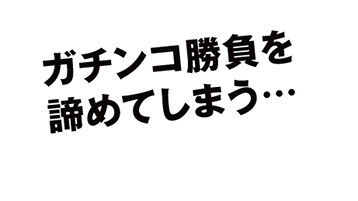
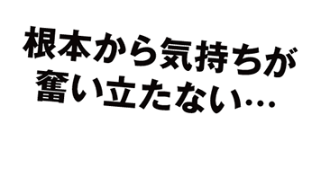
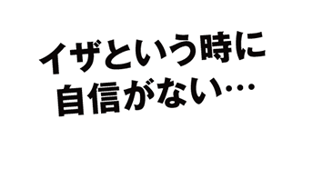
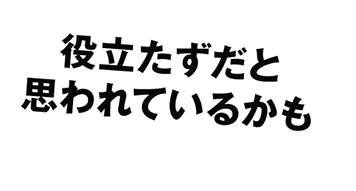
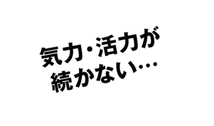
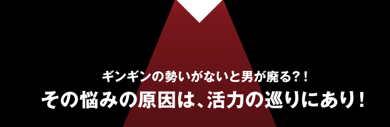
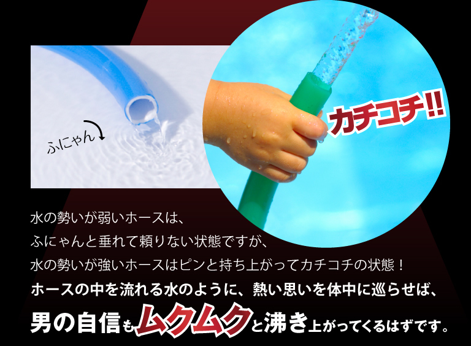
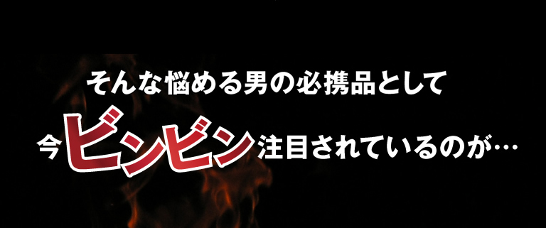
初めてのお客様に限り、万が一ご満足いただけない場合は全額返金いたします（30日間）。さらに製品先渡し、後払い方式なので、安心してお気軽にお試しください。
奮起したい男に、今注目の成分「アクテオシド」「エキナコシド」が豊富。さらに抗酸化成分のポリフェノールやホットなめぐり成分で、萎れた気持ちを硬く立ち上げます。
世界有数の長寿地区タクラマカン砂漠。砂漠人参の収穫地では、99歳の翁が孫の友人18歳の女性と結婚したという。しかも、その間に６人もの子宝に恵まれ、生涯現役を謳歌したとか。
北海道産の行者にんにくは、生育に５～７年もの歳月がかかる希少な素材。荒行を行う修験者が、たった１本かじるだけで霊峰を１日で突破する活力を得たとか。巨根にぎっしりと詰まった滋養パワーが、男の魅力を引き立てます。
女帝・考謙天皇に寵愛された僧侶・道鏡。修行中に見つけた行者にんにくを食したことで、硬く図太い自信を身に付けたとか。おかげで女帝からの寵愛を一身に受け、天皇をも超える権限を得たそう。
カーッと巡る活力を支える有用成分ジンセノサイドを、かの有名な高麗人参の10倍以上も含有。昔から金にも換えがたい価値がある素材として重宝されている。
カーッと巡る活力を支える有用成分ジンセノサイドを、かの有名な高麗人参の10倍以上も含有。昔から金にも換えがたい価値がある素材として重宝されている。
カーッと巡る活力を支える有用成分ジンセノサイドを、かの有名な高麗人参の10倍以上も含有。昔から金にも換えがたい価値がある素材として重宝されている。
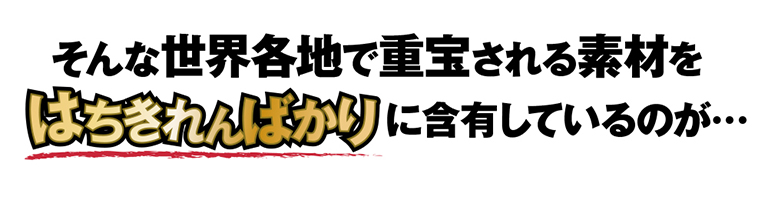
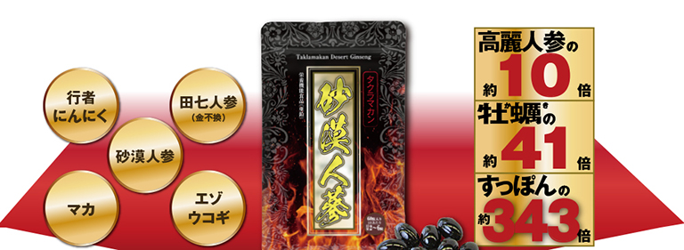
NO（一酸化窒素）は、男性の巡りに関わる活力の源で、体内で「L-アルギニン」が「L-シトルリン」に変換されるときに産生。このNOについては、1998年にアメリカのルイス・イグナロ博士がノーベル賞を受賞し、話題となりました。
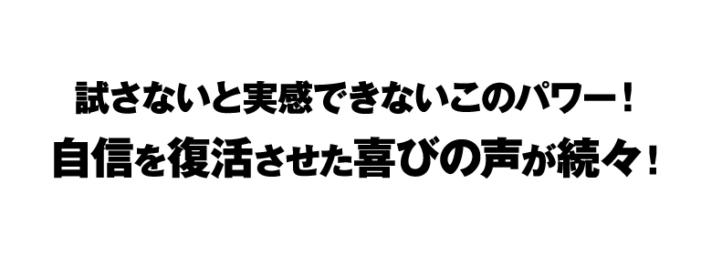
男の健康維持に一役買いそうな成分が豊富で取り寄せました。家内からも「頼もしい！」と言われるようになって、商工会のオヤジ連中にも自慢しています。
砂漠人参の話を聞くと味が心配でしたが、苦味がなく飲みやすい。頑張れるから、もう１人どう？なんて話も出てきましたよ。
試しに飲んでもらったところ、調子がよかったみたい。次の日は自分から飲んでくれて…。最近では朝まで頼もしいですね。
50歳過ぎから体力に自信がなくなって…。「タクラマカン砂漠人蔘」に出会ってからは、もう若い頃のキレが戻ったよう！まだまだ楽しめます。
「タクラマカン砂漠人参」を飲んで出かけた日は、調子が違いますね。何となく頑張れるかな？ではなく、今日は最高！って実感できます。
当製品は、女性の方のご利用やご家族のことにも配慮して作られています。ご夫婦で試すのもよし！ぜひ安心してお気軽にご注文ください。
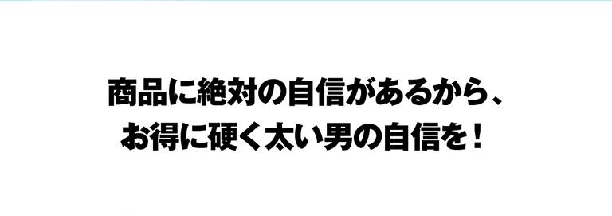
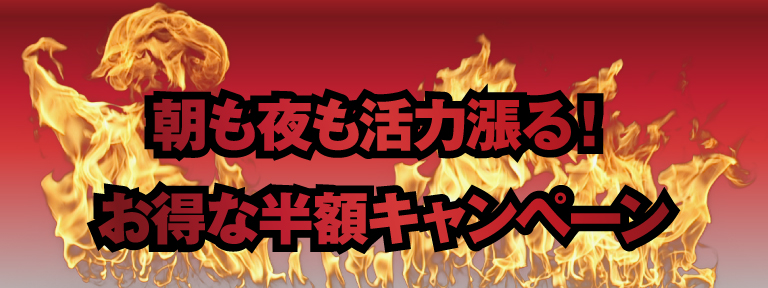
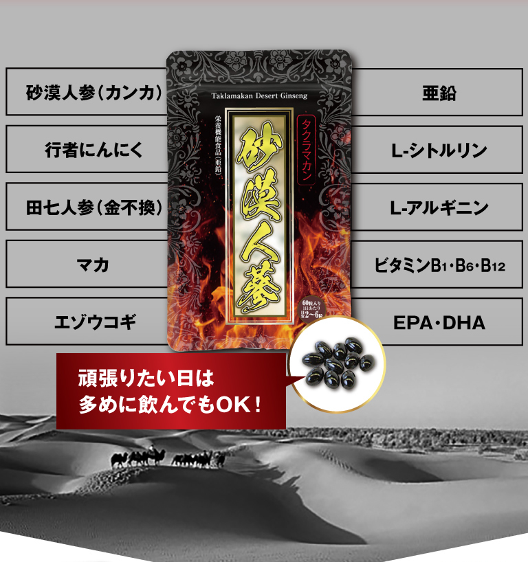